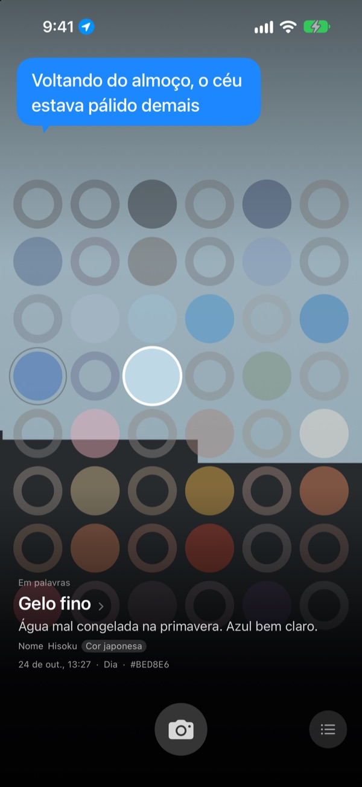
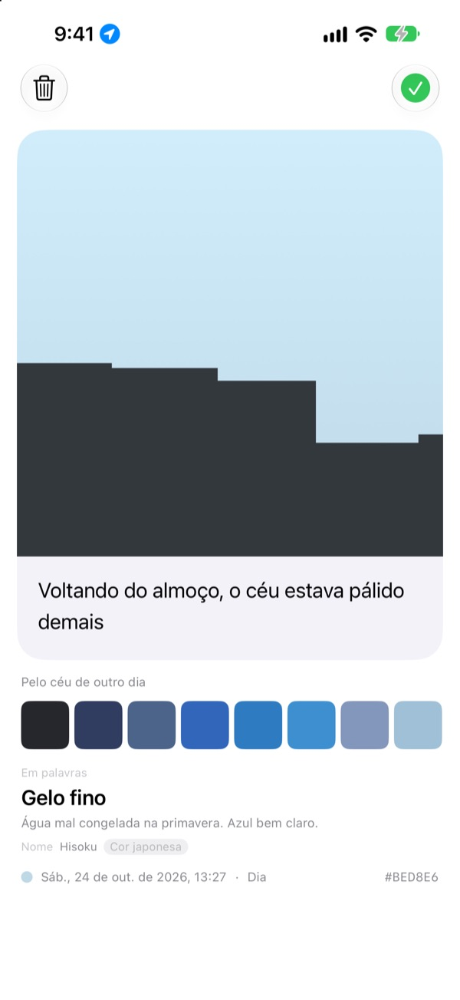
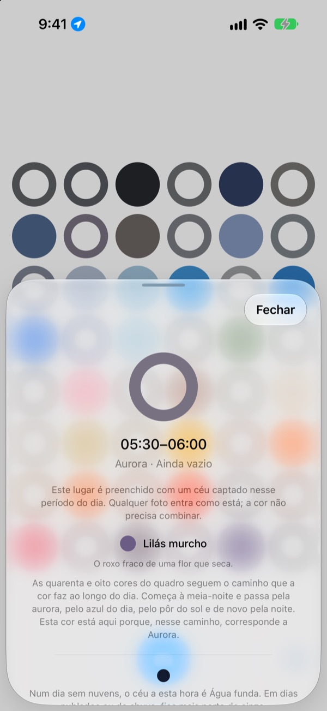
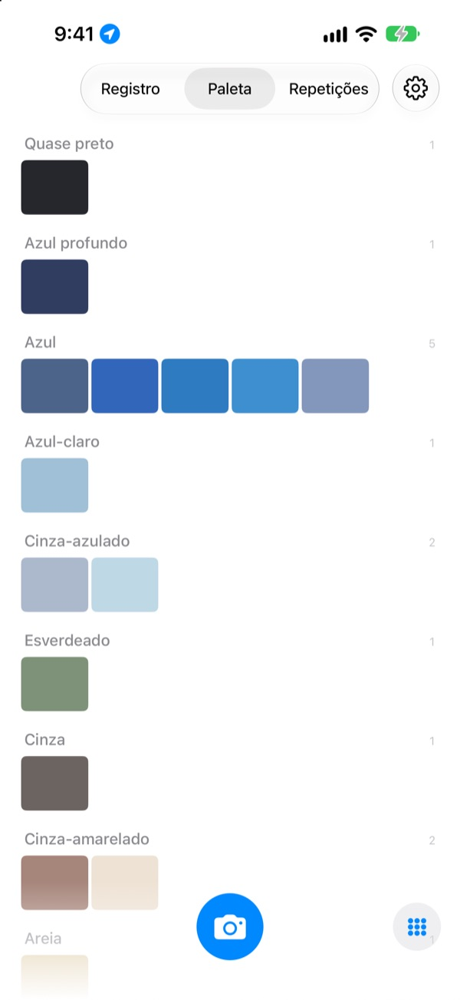

De que cor estava
o céu hoje?
Fotografe o céu e, num quadro de quarenta e oito quadrados, o daquela hora se enche com a cor que você captou. Ele ganha também um nome que dá para enxergar, como Gelo fino, Azulejo de piscina ou Caqui maduro.
Grátis. Sem conta e sem login.

Experimente o quadro
Toque em um quadrado para ver a que momento do dia ele pertence. Adicione uma foto do céu para preencher o quadrado de agora e depois avance os dias para ver como o quadro muda.
Você vê o céu todo dia, mas não lembra de nenhuma cor
O céu no caminho do trabalho, o céu na volta do almoço: à noite, você já não sabe de que cor eram. As fotos do céu que você tirou se perdem no meio de todas as outras. O SkyDex junta essas fotos como cores e mostra, em um só quadro, o caminho que o céu de hoje percorreu.
Cada céu ganha um nome
Cada cor ganha primeiro um nome que dá para imaginar, como Gelo fino, Azulejo de piscina ou Caqui maduro. Logo abaixo vem um nome com origem: uma cor tradicional coreana ou japonesa, um pigmento ou uma cor web.
Quando a cor chega perto, aparece Nome; quando não, com franqueza, Nome mais próximo.

Deixe uma linha
Assim que você tira a foto, um cartão se abre. Escreva o que pensou ao olhar para cima, e a frase volta a flutuar sobre o céu sempre que você tocar naquele quadrado do quadro.
Você também pode pôr sobre esta foto a cor do céu de outro dia e compartilhar o resultado como imagem.

Os quadrados vazios mostram o caminho
Toque em um quadrado vazio para saber a que momento do dia ele corresponde e que cor procurar. Ele também mostra como fica o céu naquela hora em um dia sem nuvens, de acordo com o nascer e o pôr do sol onde você está.
A cor não precisa bater. O cinza de um dia nublado também é a cor do céu daquele dia.

Registro, paleta, repetições
Veja seus céus em ordem e reúna as cores em paletas por família, como azul, cinza e areia. Fotografe a mesma hora em outro dia e os dois céus ficam lado a lado.
Os widgets da tela de início mostram num relance o quadro de hoje e o céu de hoje.

Para começar, três passos
- 1
Olhe para cima
Toque no botão da câmera embaixo do quadro e deixe o céu tomar todo o recorte quadrado.
- 2
Um quadrado se preenche
O quadrado de agora ganha a cor que você captou, e um nome.
- 3
Deixe uma linha
No cartão que se abre, escreva o que você pensou ao ver aquele céu.
Como o quadro divide o dia
- Meia-noite · 00:00–05:00
- seis quadrados
- Aurora · 05:00–08:00
- seis quadrados
- Dia · 08:00–16:00
- doze quadrados
- Fim de tarde · 16:00–18:00
- seis quadrados
- Pôr do sol · 18:00–21:00
- doze quadrados, um a cada 15 minutos
- Noite · 21:00–24:00
- seis quadrados
Perto do pôr do sol, quando o céu muda depressa, os quadrados ficam apertados; no meio da madrugada, quando ele quase não muda, ficam largos. No alto fica a meia-noite, e o dia vai descendo.
Perguntas frequentes
Como um quadrado é preenchido?
Um céu que você fotografa hoje preenche o quadrado da hora em que foi tirado, mesmo que a cor não seja a esperada: naquela hora, o céu estava assim mesmo. Os céus de dias anteriores entram pela cor: se um deles estiver perto o bastante da cor de um quadrado, preenche esse quadrado, e cada céu preenche um só.
Um quadrado que estava cheio ontem está vazio hoje.
O quadro é sempre o de hoje. Um quadrado que um céu de ontem preencheu pelo horário volta a ser comparado só pela cor quando o dia vira. Por isso, em alguns dias o quadro fica quase cheio e em outros parece vazio. Suas fotos não sumiram: todos os céus estão no Registro e, em ordem de cor, na Paleta.
Meus quadrados preenchidos estão desbotando.
É de propósito. Uma foto mantém a cor verdadeira por uma semana e depois desbota devagar ao longo das oito semanas seguintes. Ela não é apagada e nunca some por completo. Fotografe o céu naquela hora de novo e o quadrado volta na mesma hora à cor plena. Não há sequência para manter nem pontos para recuperar.
A cor precisa bater?
Não. Não existe aprovado ou reprovado. Toda foto é salva, e o cinza de um dia nublado também é a cor do céu daquele dia.
Por que o app pede minha localização?
Só para mostrar, quando você toca em um quadrado vazio, a cor de um céu sem nuvens naquela hora, de acordo com o nascer e o pôr do sol onde você está. Ele usa uma localização aproximada, na casa do quilômetro, e as coordenadas nunca são anexadas às fotos. Se você recusar, tudo continua funcionando, com Seul como referência.
Posso adicionar um céu da minha biblioteca?
Pode. Um céu escolhido em Fotos em vez da câmera também é cortado em quadrado e preenche o quadrado de agora, como um que você acabou de fotografar.
Como apago uma foto?
Abra a foto e toque em Apagar, ou deslize para a esquerda no Registro. Ela é removida do aparelho e do iCloud ao mesmo tempo. Se você apagar o app, a cópia no iCloud continua lá, e seus céus voltam quando você reinstalar.
O que acontece se eu trocar de aparelho?
Seus céus ficam no seu próprio iCloud e seguem para um aparelho novo conectado à mesma Conta Apple. Não há conta nem servidor, e suas fotos e cores nunca são enviadas ao desenvolvedor. Sem anúncios e sem rastreamento.
É grátis mesmo?
É, todos os recursos são grátis. Se gostar, você pode deixar uma gorjeta para o desenvolvedor dentro do app, mas a gorjeta não libera nada.
Em quais aparelhos funciona?
No iPhone com iOS 17.0 ou posterior, só na vertical.
Bugs, algo estranho ou qualquer coisa que você queira dizer: escreva para leeo@kakao.com. Contar o que você estava fazendo e qual versão do iOS usa ajuda muito a encontrar o problema.